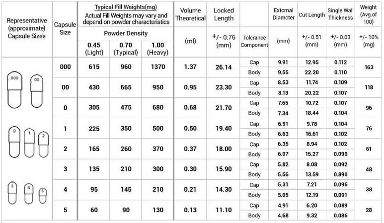

HRT Oil Capsule Tutorial
Progesterone oil capsules give you the flexibility to take your progesterone orally or rectally vs suppositories which are horrible tasting and impractical for oral use. Some people like to take oral progesterone despite the low bioavailability due to the metabolism to allopregnanolone, which is a mild sedative and may help some people feel calmer and sleep better.
This procedure is also ideal for people who are unable to access PolyBlendRx, however note that capsules may be susceptible to leaking if exposed to high temperatures or you use another oil with a lower melting point. It is messy and requires a degree of care to fill the capsules with oil while avoiding a mess.
Supplies
Tools (non-consumable):
- Scale
- 500g (.01 resolution) - Should be fine for progesterone as the target API amount is 10-20g depending on dosage.
- 20g (.001 resolution)
- 5kg (0.01 resolution)
- Glass Beakers
- Magnetic Stirring Hot Plate
- Buy the 380 °C version
- Stir Bars
- IR Thermometer
- Capsule Machine
- Note that depending on where you are located these may be regulated. This usually means you are reported as someone who purchased a capsule machine, but many people use these for making custom supplements. You may be able to buy one locally at a vitamin shop.
Consumables:
- Coconut Oil - This can also be bought locally at Costco or a supermarket.
- Weight Boats - Optional, but makes weighing powders less annoying.
- 10mL Syringes
- 18g needles are fast to work with, however they do have a tendency to drip while filling capsules. A smaller size may work better, however 25g was too small and proved difficult during testing, so I switched back to 18g.
- Gelatin Capsules - Holds the mixture of API and filler. We are using size 1 capsules for this tutorial. You can also buy these locally from vitamin stores. If you are making a lot of capsules, you can buy the two sides pre-separated which may save you time.
APIs:
We suggest buying APIs from TeaHRT or Allie.
Recipe
These recipes target 100 size 1 capsules, which I measured to have a volume of 0.44 mL per capsule.
You can target other size capsules either by estimating the volume based on the chart below, or using an insulin syringe full of oil to measure the fill height of a capsule. Note that the actual fill amount I got for size 1 capsules was 88 percent the fill amount in the diagram below, so you will want to undershoot the size of the capsule to avoid wasted solution or overfilling.

Note that coconut oil varies in density depending on batch and where you buy it from, so we will measure it using volume instead of weighing it.
100mg Capsules
| Ingredient | Mass (g) | Density (g/mL) | Volume (mL) |
|---|---|---|---|
| Coconut Oil | 35.46 | ||
| Progesterone | 10 | 1.171 | 8.54 |
| Total | 44 (target) |
150mg Capsules
| Ingredient | Mass (g) | Density (g/mL) | Volume (mL) |
|---|---|---|---|
| Coconut Oil | 31.19 | ||
| Progesterone | 15 | 1.171 | 12.81 |
| Total | 44 (target) |
200mg Capsules
| Ingredient | Mass (g) | Density (g/mL) | Volume (mL) |
|---|---|---|---|
| Coconut Oil | 26.92 | ||
| Progesterone | 20 | 1.171 | 17.08 |
| Total | 44 (target) |
Procedure
It is important to have a clean work area for this and wear gloves. Note however that cleaning capsule filling machines with IPA may cause them to degrade, so instead washing with soap and water is recommended. Ensure everything is completely dry before starting. The process of filling capsules is somewhat time consuming and messy.
Preparing the Capsule Machine
- Follow the directions which came with your capsule
machine to load it with capsule bodies and caps.
- If you are using the machine I linked, there is an online document and a video tutorial explaining the process.
- I'll walk you through what to do with the modified procedure for filling oil capsules.
- Separate 100 capsules into bottom and top
pieces.
- You can use the weight boats to hold the capsule tops and bottoms while doing this.
- Place the body plate on the table, ensuring no plates are placed on top of it. The body plate is the main assembly of the capsule filler which serves as the base and contains spring loaded components.
- Place the frame plate on top of the body plate. The
frame plate is used to fill the capsule machine with the larger of
the capsule halves. Shake it gently to allow most of the capsules to
fall into place.
- You may need to manually move capsule halves between holes and flip them over. A set of tweezers can be useful for this.
- Place the body plate aside and put the capping plate down on your workspace. The capping plate has a series of indentations which fit the caps of the capsules.
- Place the frame plate onto the capping plate and use it to place all of the capsule caps into the capping plate, similar to how you did with the capsule bodies in step 4.
- Remove the frame plate and place the middle plate on top of the capping plate. This should snugly fit around all of the capsules and allow the capping plate to be picked up and inverted without anything falling out.
Mixing
- Get out your hot plate and start it heating to approximately 150 °F (65 °C).
- It is extremely important that the temperature of the oil and progesterone solution not reach 250 °F (121 °C), as the micronized progesterone will melt and re-crystalize into a larger particle size which will reduce bioavailability.
- You should use the laser thermometer to monitor the temperature throughout this process.
- Use the 50 mL beaker to measure out the estimated amount of coconut oil needed based on the selected recipe and allow it to melt.
- Weigh out the desired amount of progesterone onto one of the weigh boats.
- Add a stir bar to the 100 mL beaker and place it on the hot plate, replacing the 50 mL beaker.
- Using a 10 mL syringe, transfer melted coconut oil to the 100 mL beaker according to the selected recipe.
- Enable stirring and slowly add the progesterone powder from the weigh boat to the
suspension, allowing it to mix before adding more.
- You may need to stop and restart stirring if the stir bar gets jammed or stalled.
Filling the Capsules
- Fill a 10 mL syringe with the oil suspension.
- Carefully use the syringe to fill each capsule with solution, being careful not to overfill.
- Repeat the first two steps until all the capsules are full.
- You can pause stirring while drawing the solution into the syringe. It is suggested to keep stirring enabled while filling capsules to prevent settling of the suspension.
- Carefully hold the capping plate and middle plate combination and place it upside down over the body plate you set aside earlier.
- Press down firmly and evenly several times to force
the capsules together.
- You may not push down hard enough at first. You should feel the capsules fitting together and locking closed.
- When you pick up the capsule plate, the capsules should appear full and should not come apart easily.
- Remove all of the capsules from the machine and place them into your storage container.
Administration
Take the desired amount before bed daily. You can take the capsules orally or rectally. Often people will take 100-200mg of progesterone daily.